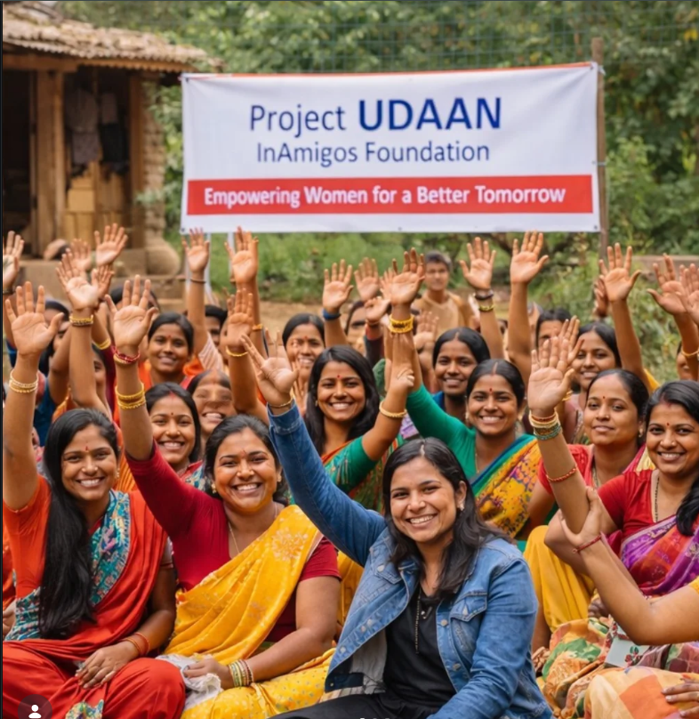
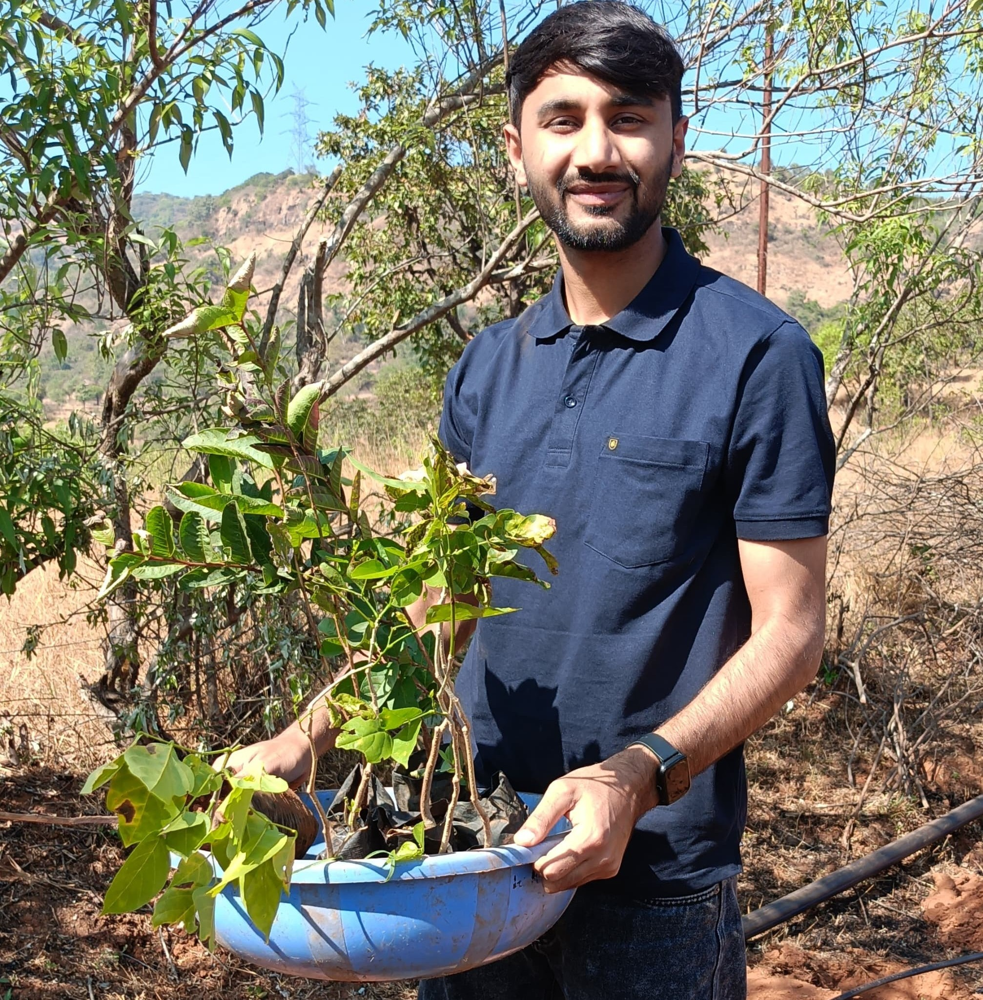

InAmigos Foundation is a non-profit organization founded on September 23, 2020,
by Mr. Govind Shukla. Operating across India, the foundation is dedicated to
creating meaningful social impact through education, community welfare,
environmental sustainability, women empowerment, animal welfare, and skill
development initiatives.
With the support of passionate volunteers and professionals, InAmigos Foundation
works towards building a more inclusive, compassionate, and empowered society.
The organization believes that collective action can bring lasting change and
improve the lives of underprivileged communities.
Our Mission
Our mission is to create sustainable social impact by addressing
key challenges in education, community welfare, environmental
conservation, women empowerment, animal welfare, and skill
development. Through collaborative efforts, volunteer engagement,
and innovative initiatives, InAmigos Foundation strives to build
a more inclusive, compassionate, and empowered society.
Our Credentials & Recognitions
Section 8 Registered
Licensed by the Central Government as a non-profit organization.
80G & 12A Certified
Ensuring transparency, accountability, and donor tax benefits.
CSR-1 Registered
Eligible to collaborate with corporate CSR initiatives.
NITI Aayog Registered
Aligned with national development and social impact goals.
ISO 9001:2015 Certified
Committed to maintaining high-quality operational standards.
Our Reach & Impact
200+
Active Volunteers
28
States Across India
6
Major Social Causes
50,000+
Beneficiaries Supported
Key Achievements
Distributed over 50,000 meals and clothing items to people in need.
Planted more than 20,000 saplings to support environmental conservation.
Trained over 30,000 interns through skill development and internship programs.
Supporting and feeding 50+ stray animals daily.
Providing educational support and digital literacy training to underprivileged children.
Empowering women through awareness, skill development, and self-help initiatives.
Our Projects
Project SEVA
Supporting underprivileged communities by providing food, clothing,
and essential resources to those in need.
Project BACHPANSHALA
Bridging educational gaps through school support, digital literacy,
and life skills training for children.
Project JEEV
Dedicated to animal welfare by feeding and supporting stray animals
through a volunteer-driven network.

Project UDAAN
Empowering women through financial literacy, skill development,
and menstrual hygiene awareness.

Project PRAKRITI
Promoting sustainability through tree plantation drives and
environmental conservation initiatives.
Project VIKAS
Facilitating employment and skill development through internships
and professional training programs.
Gallery
Why Our Work Matters
Millions of people continue to face challenges related to education, poverty,
unemployment, environmental degradation, and social inequality.
InAmigos Foundation addresses these challenges through targeted initiatives
that create measurable and sustainable impact. By supporting communities,
empowering individuals, and promoting responsible social action, the foundation
contributes to building a stronger and more equitable society.
Join Us
Every contribution can make a difference.
Whether you choose to volunteer, partner with us,
participate in our programs, or support our initiatives,
your involvement helps us reach more communities and create greater impact.


Connect With Us